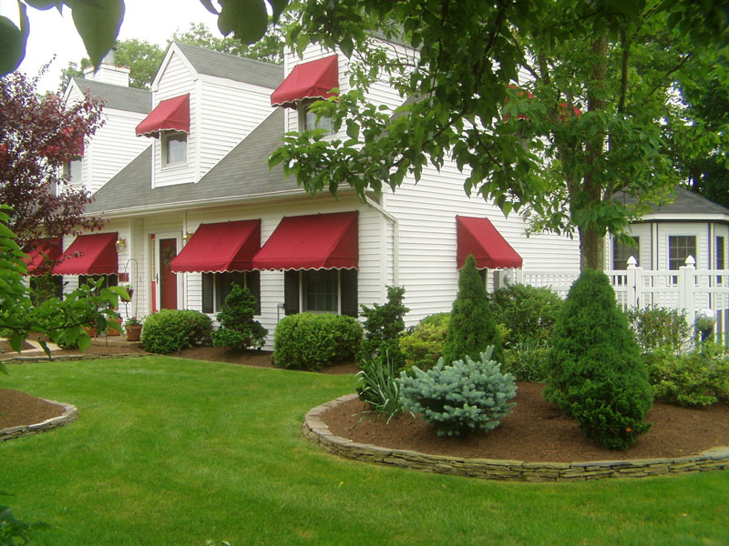
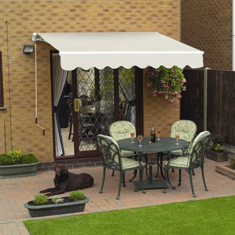

Τέντες
Κλασικές, κασετίνες ή κάθετες. Επιλέγουμε μαζί ύφασμα και σύστημα, για σκιά που λειτουργεί και δένει με την όψη του χώρου.
Τέντες που κάνουν κάθε μπαλκόνι, αυλή και επαγγελματικό χώρο πιο απολαυστικό. Μελετάμε τον χώρο σας και βρίσκουμε μαζί τη λύση σκίασης που του ταιριάζει.

Κάθε χώρος έχει τις δικές του ανάγκες. Δείτε τις βασικές μας λύσεις και ας βρούμε μαζί αυτή που σας ταιριάζει.
Κλασικές, κασετίνες ή κάθετες. Επιλέγουμε μαζί ύφασμα και σύστημα, για σκιά που λειτουργεί και δένει με την όψη του χώρου.
Δώστε νέα όψη στην υπάρχουσα τέντα σας. Μετράμε, προτείνουμε ύφασμα και φροντίζουμε για την εφαρμογή του.

Δεν ξεκινάμε από έναν κατάλογο. Ξεκινάμε από εσάς: πώς χρησιμοποιείτε τον χώρο, πού πέφτει ο ήλιος και τι αισθητική θέλετε.
Συμπληρώστε λίγα στοιχεία για τον χώρο σας και ετοιμάστε ένα μήνυμα για να μας στείλετε. Θα χαρούμε να σας εξυπηρετήσουμε.